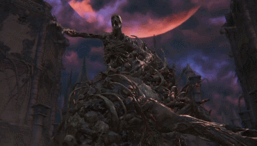

The One Reborn

Description
Born of unholy ritual, the One Reborn is an amalgam of the bodies piled up
in Yharnam, merged into a disgusting creature. It is supported by witches
around the arena.
Tips
- Take care of the witches supporting the boss as they will keep healing it.
- You can use both Bolt or Fire damage for it is weak to those types of damage.
- If the main "body" controlling the lump falls to the ground, focus the attacks on it for extra damage.